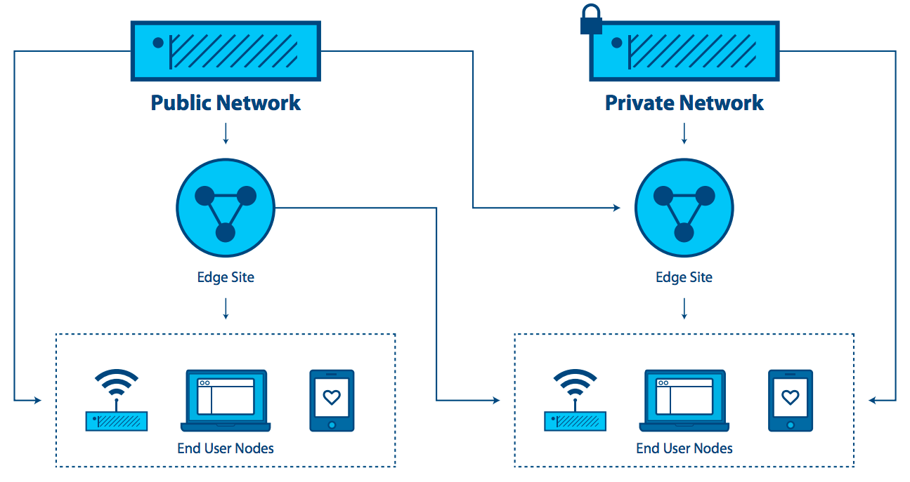

Cloud Edge Computing: Hinter dem Rechenzentrum¶
VORSTELLUNG¶
Seit mehr als einem Jahrzehnt gilt zentralisiertes Cloud Computing als Standard-IT-Bereitstellungsplattform. Obwohl Cloud Computing allgegenwärtig ist, beginnen neue Anforderungen und Arbeitslasten ihre Grenzen aufzudecken. Mit seiner starken zentralsorientierten Sicht auf Rechenzentren, wo Rechen- und Speicherressourcen relativ zahlreich und zentralisiert sind, wurde der Optimierung des unterstützenden Hypervisor- und Managementplattform-Footprints nie oder nur wenig Beachtung geschenkt. Nur wenige Cloud-Entwickler haben die Anforderungen zur Unterstützung von ressourcenbeschränkten Knoten, die nur über unzuverlässige oder bandbreitenbeschränkte Netzwerkverbindungen erreichbar sind, ernsthaft in Betracht gezogen oder über die Anforderungen von Anwendungen nachgedacht, die an vielen Standorten eine sehr hohe Bandbreite, geringe Latenz oder eine weit verbreitete Rechenkapazität erfordern.
Neue Anwendungen, Dienste und Workloads erfordern zunehmend eine andere Art von Architektur, die direkt eine verteilte Infrastruktur unterstützt. Neue Anforderungen an Verfügbarkeit und Cloud-Fähigkeit an entfernten Standorten sind erforderlich, um sowohl die heutigen Anforderungen (Datenanalyse im Einzelhandel, Netzwerkdienste) als auch die Innovationen von morgen (Smart Cities, AR / VR) zu unterstützen. Die Reife, Robustheit, Flexibilität und Einfachheit der Cloud muss jetzt auf mehrere Standorte und Netzwerke ausgedehnt werden, um den sich entwickelnden Anforderungen gerecht zu werden.
In letzter Zeit haben Unternehmen begonnen, die vereinfachte Verwaltung und Flexibilität von Cloud-Computing-Architekturen auf verteilte Infrastrukturen anzuwenden, die sich über mehrere Standorte und Netzwerke erstrecken. Unternehmen haben zunehmend die Notwendigkeit, Cloud-Funktionen über WAN-Netzwerke und zunehmend kleinere Implementierungen am Netzwerkrand zu nutzen. Obwohl dieser Ansatz noch in seinen Anfängen ist, wird deutlich, dass viele neue Anwendungsfälle und Szenarien von verteilten Architekturen profitieren würden.
In diesem Papier untersuchen wir dieses aufkommende Bedürfnis. Es wurde viele Namen genannt: verteilte Cloud, Fog-Computing, Rechenzentren der 4. Generation, aber für die Zwecke dieses Dokuments bleiben wir bei einem gemeinsamen, leicht verständlichen Begriff - Cloud Edge Computing.
Die Edge Computing Group sieht diese Entwicklung des Cloud-Computing als sehr aufregend, obwohl wir uns bewusst sind, dass OpenStack in der Lage ist, Cloud Edge Computing zu unterstützen. Basierend auf dem anfänglichen Interesse der Community am OpenStack Summit Boston fand im September 2017 ein zweitägiger Workshop statt, bei dem über 200 Benutzer und Entwickler die Arbeit zur Definition relevanter Anwendungsfälle und der Werkzeuge und Architekturen für ihre Unterstützung begannen . Ein Proof of Concept wurde durchgeführt und die Gemeinde hat einige frühe Implementierungen durchgeführt. Die Edge Computing Group hat sich nun der Herausforderung gestellt, grundlegende Anforderungen an eine voll funktionsfähige Edge-Computing-Cloud-Infrastruktur zu beschreiben.
In diesem Dokument verfolgen wir mehrere wichtige Aufgaben:
- Kultivieren einer Konversation rund um Cloud Edge Computing, einschließlich einiger grundlegender Definitionen, um das Interesse und Engagement der Open-Source-Community zu wecken.
- Unterstützen sowohl der Open Source- als auch der OpenStack-Communities bei der Entwicklung von Tools und Standards, die für eine breite Akzeptanz erforderlich sind.
- Erkunden, wie sich aktuelle Tools, Standards und Architekturen ändern müssen, um dieses verteilte Cloud-Modell unterzubringen.
Es gibt viel zu tun, um unsere Ziele zu erreichen, und wir begrüßen und ermutigen die gesamte Open-Source-Community, sich an den Bemühungen und Möglichkeiten zu beteiligen, Tools zu entwickeln oder anzupassen, um die neuen Anforderungen des Cloud Edge Computing zu erfüllen.
WAS IST CLOUD EDGE COMPUTING?¶
Es ist hervorzuheben, dass viele überlappende und manchmal widersprüchliche Definitionen von Edge-Computing existieren. Edge-Computing bedeutet für viele Menschen viele Dinge. Die ausgereifteste Sicht von Edge Computing für unsere Zwecke ist jedoch, dass es Anwendungsentwicklern und Dienstanbietern Cloud-Computing-Funktionen sowie eine IT-Serviceumgebung am Rande eines Netzwerks bietet.
Ziel ist es, Rechenleistung, Speicher und Bandbreite den Dateneingaben und/oder Endnutzern viel näher zu bringen. Eine Edge-Computing-Umgebung zeichnet sich durch potenziell hohe Latenzzeiten unter allen Standorten und geringe und unzuverlässige Bandbreite aus - neben ausgeprägten Möglichkeiten der Servicebereitstellung und Anwendungsfunktionalität, die mit einem Pool zentraler Cloud-Ressourcen in entfernten Rechenzentren nicht erreicht werden können. Indem einige oder alle Verarbeitungsfunktionen näher an den Endbenutzer oder den Datensammelpunkt verschoben werden, kann Cloud Edge Computing die Auswirkungen weit verbreiteter Standorte mindern, indem der Effekt der Latenz auf die Anwendungen minimiert wird.
Edge Computing wurde zuerst durch die Virtualisierung von Netzwerkdiensten über WAN-Netzwerke entwickelt und entfernte sich damit vom Rechenzentrum. Die anfänglichen Anwendungsfälle waren auf den Wunsch zurückzuführen, eine Plattform zu nutzen, die die Flexibilität und die einfachen Tools bietet, an die sich Cloud-Computing-Benutzer gewöhnt haben.
Wenn neue Edge-Computing-Fähigkeiten entstehen, sehen wir ein sich wandelndes Paradigma für das Computing - eines, das nicht mehr unbedingt an die Notwendigkeit gebunden ist, zentralisierte Rechenzentren zu bauen. Für bestimmte Anwendungen nimmt das Cloud Edge Computing die Lehren aus Virtualisierung und Cloud Computing und schafft die Möglichkeit, potenziell Tausende von massiv verteilten Knoten zu verwenden, die auf verschiedene Anwendungsfälle wie industrielles IoT oder sogar weit entfernte Überwachungsnetzwerke angewendet werden können zur Verfolgung der Wasserressourcen in Echtzeit über Tausende oder Millionen von Standorten.
Viele proprietäre und quelloffene Edge-Computing-Funktionen sind bereits vorhanden, ohne auf verteilte Cloud angewiesen zu sein - einige Hersteller bezeichnen dies als „Device Edge“. Zu den Komponenten dieses Ansatzes gehören Elemente wie IoT-Gateways oder NFV-Appliances. Anwendungen benötigen jedoch zunehmend die Vielseitigkeit der Cloud am Rande, obwohl die Tools und Architekturen, die für den Aufbau verteilter Edge-Infrastrukturen benötigt werden, noch in den Kinderschuhen stecken. Unserer Ansicht nach wird der Markt weiterhin bessere Fähigkeiten für Cloud Edge Computing verlangen.
Edge-Computing-Funktionen umfassen, sind aber nicht beschränkt auf:
- Ein konsistentes Betriebsparadigma über verschiedene Infrastrukturen hinweg.
- Die Fähigkeit, in einer massiv verteilten Umgebung (denke an Tausende von globalen Standorten) zu arbeiten.
- Die Bereitstellung von Netzwerkdiensten für Kunden an global verteilten Remote-Standorten.
- Anforderungen an Anwendungsintegration, Orchestrierung und Servicebereitstellung
- Hardware-Einschränkungen und Kostenbeschränkungen.
- Begrenzte oder unterbrochene Netzwerkverbindungen.
- Methoden, um Anwendungen mit strengen niedrigen Latenzanforderungen (AR/VR, Sprache usw.) zu adressieren.
- Geofencing und Anforderungen für die lokale Aufbewahrung sensibler Daten.
EINE TIEFERE ERKUNDUNG DER EDGE-COMPUTING-ÜBERLEGUNGEN¶
Der „Edge“ im Edge Computing bezieht sich auf die Randbereiche einer Verwaltungsdomäne, möglichst nahe bei diskreten Datenquellen oder Endbenutzern. Dieses Konzept gilt für Telekommunikationsnetze, für große Unternehmen mit verteilten Standorten wie dem Einzelhandel oder für andere Anwendungen, insbesondere im Zusammenhang mit IoT.

Eine der Eigenschaften von Edge Computing besteht darin, dass die Anwendung stark mit der Kantenposition verknüpft ist. Bei Telekommunikationsdiensten würde sich „der Rand“ auf einen Punkt in der Nähe des Endbenutzers beziehen, der jedoch vom Anbieter kontrolliert wird und möglicherweise einige Elemente von Workloads auf Endbenutzergeräten ausführen kann. Für große Unternehmen ist „der Rand“ der Punkt, an dem die Anwendung, der Dienst oder die Arbeitslast verwendet wird (z. B. ein Einzelhandelsgeschäft oder eine Fabrik). Für die Zwecke dieser Definition ist die Kante kein Endgerät mit extrem begrenzter Kapazität zum Unterstützen selbst einer minimalen Cloud-Architektur, wie etwa eines IoT oder einer Sensorvorrichtung. Dies ist eine wichtige Überlegung, da viele Diskussionen über Edge Computing diese Unterscheidung nicht machen.
Edge Computing ähnelt der Datencenter-Datenverarbeitung:
- Es enthält Rechen-, Speicher- und Netzwerkressourcen.
- Ihre Ressourcen können von vielen Benutzern und vielen Anwendungen gemeinsam genutzt werden.
- Es profitiert von der Virtualisierung und Abstraktion des Ressourcenpools.
- Es profitiert von der Möglichkeit, Standardhardware zu nutzen.
- Es verwendet APIs zur Unterstützung der Interoperabilität.
Edge Computing unterscheidet sich von der Datenverarbeitung in großen Rechenzentren dadurch, dass
- Edge-Sites sind so nah wie möglich an die Endbenutzer. Sie verbessern die Erfahrung bei hohen Latenzzeiten und unzuverlässigen Verbindungen.
- Benötigt möglicherweise spezielle Hardware, z. B. GPU / FPGA-Plattformen für AR/VR-Funktionalität.
- Edge kann auf eine große Anzahl von Sites skaliert werden, die an verschiedenen Orten verteilt sind.
- Der Standort einer Edge-Site und die Identität der Access-Links, die sie beendet, sind signifikant. Eine Anwendung, die in der Nähe ihrer Benutzer ausgeführt werden muss, muss sich im rechten Teil der Kante befinden. Es ist üblich, dass der Anwendungsort bei Edge Computing eine Rolle spielt.
- Der gesamte Pool von Websites kann als dynamisch angesehen werden. Aufgrund ihrer physischen Trennung werden Edge-Sites in einigen Fällen miteinander und der Core mit WAN-Verbindungen verbunden sein. Edge-Sites werden dem Infrastrukturpool im Laufe der Zeit beitreten und ihn verlassen.
- Edge-Sites sind remote und potenziell unbemannt und müssen daher remote verwaltet werden. Tools müssen den intermittierenden Netzwerkzugriff auf die Site unterstützen.
- Edge unterstützt große Unterschiede in der Site-Größe und Skalierung, von der Datencenter-Skalierung bis hin zu einem einzelnen Gerät.
- Edge-Sites können Ressourcenbeschränkungen aufweisen. Das Hinzufügen von Kapazität zu einer vorhandenen Site ist aufgrund von Platz- oder Leistungsanforderungen eingeschränkt.
- Für einige Anwendungsfälle ist eine massenhafte Mandantenfähigkeit erforderlich.
- Die Isolierung von Edge-Computing von Datencenter-Clouds kann erforderlich sein, um sicherzustellen, dass sich Kompromisse in der Domäne „externe Cloud“ nicht auf Services auswirken.
Das Konzept des Edge Computing muss sowohl die Edge-Site (z. B. die Computing-, Netzwerk- und Speicherinfrastruktur) als auch die Anwendungen (Workloads), die darauf ausgeführt werden, abdecken. Es ist erwähnenswert, dass alle Anwendungen in einer Edge-Computing-Umgebung potenziell alle oder einige der Funktionen nutzen können, die von Cloud Computing, Blockspeicher, Objektspeicher, virtuellem Netzwerk, Bare-Metal-Systemen oder Containern bereitgestellt werden.
Die wesentlichen Funktionen, die Edge Computing vom Cloud Computing definieren und trennen, sind:
- die Fähigkeit, einen dynamischen Pool von mehreren potenziell weit verteilten Sites zu unterstützen,
- potenziell unzuverlässige Netzwerkverbindungen und
- Die Wahrscheinlichkeit von schwer zu lösenden Ressourcenbeschränkungen an Standorten im gesamten Netzwerk.
ERKENNTNISMERKMALE UND VERWENDUNGSFÄLLE¶
Was wissen wir bisher über Edge-Computing-Eigenschaften, Anwendungsfälle und Szenarien?
Der entscheidende Bedarf, der Cloud Edge Computing vorantreibt, ist die Notwendigkeit, dass die Bereitstellung von Diensten näher an den Benutzern oder Endpunktdatenquellen erfolgt. Edge-Computing-Umgebungen arbeiten mit der Kernkapazität zusammen, zielen jedoch darauf ab, eine verbesserte Endbenutzererfahrung zu bieten, ohne unvernünftige Anforderungen an die Konnektivität zum Kern zu stellen. Verbesserungen ergeben sich aus:
- Reduzieren der Latenz: Die Latenz für den Endbenutzer könnte niedriger sein, als wenn der Computer weiter entfernt wäre, was zum Beispiel responsive Remote-Desktops oder erfolgreiches AR oder besseres Spielen möglich macht.
- Mindern der Bandbreitenbeschränkungen: Die Möglichkeit, Workloads näher an die Endbenutzer oder Datenerfassungspunkte zu verschieben, reduziert die Auswirkungen der begrenzten Bandbreite an einem Standort. Dies ist besonders nützlich, wenn der Dienst am Randknoten die Notwendigkeit verringert, große Datenmengen zur Verarbeitung an den Kern zu übertragen, wie dies häufig bei IoT- und NFV-Arbeitslasten der Fall ist. Datenreduktion und lokale Verarbeitung können sowohl in reaktionsfähigere Anwendungen umgesetzt werden als auch die Kosten für den Transport von Terabytes an Daten über große Entfernungen reduzieren.
Aber es gibt Kompromisse. Um Edge Computing zu liefern, muss die Anzahl der Bereitstellungen erheblich erhöht werden. Dies stellt eine große Herausforderung für die weitverbreitete Edge-Bereitstellung dar. Wenn die Verwaltung einer einzelnen Cloud ein Team von zehn Personen umfasst, wie kann eine Organisation mit hunderten oder gar tausenden kleinen Clouds umgehen? Einige Anforderungen umfassen:
- Standardisierung und Infrastrukturkonsistenz sind erforderlich. Jeder Ort muss ähnlich sein; eine bekannte Menge.
- Die Verwaltbarkeit muss automatisiert werden. Bereitstellung, Austausch und alle behebbaren Fehler sollten einfach und unkompliziert sein.
- Einfache, kosteneffektive Pläne müssen erstellt werden, wenn die Hardware ausfällt.
- Lokal fehlertolerante Designs können wichtig sein, insbesondere in Umgebungen, die entfernt oder unerreichbar sind - eine Zero Touch-Infrastruktur ist wünschenswert. Dies ist eine Frage, die die Kosten für den Kauf und den Betrieb redundanter Hardware mit den Kosten von Ausfällen und Notfallreparaturen in Einklang bringt. Überlegungen umfassen:
- Müssen diese Standorte autark sein?
- Wenn ein Standort einen Fehler aufweist, wird niemand vor Ort sein, um ihn zu beheben, und lokale Ersatzteile sind unwahrscheinlich.
- Müssen Fehler toleriert werden? Und wenn ja, wie lange wird es dauern, bis jemand zur Reparatur bereit ist - zwei Stunden, eine Woche, ein Monat?
- Wartbarkeit muss unkompliziert sein: Ungeübte Techniker führen manuelle Reparaturen und Ersetzungen durch, während ein erfahrener Remote-Administrator Software neu installiert oder wartet.
- Physische Designs müssen möglicherweise komplett überarbeitet werden. Die meisten Edge-Computing-Umgebungen sind nicht ideal - begrenzte Leistung, Schmutz, Feuchtigkeit und Vibration müssen berücksichtigt werden.
ANWENDUNGSFÄLLE¶
Es gibt wahrscheinlich Dutzende von Möglichkeiten, Anwendungsfälle zu charakterisieren, und dieses Papier ist zu kurz, um eine erschöpfende Liste zu liefern. Aber hier sind einige Beispiele, die helfen, das Denken zu klären und Möglichkeiten für die Zusammenarbeit aufzuzeigen.
Vier Hauptkategorien von Workload-Anforderungen, die von einer verteilten Architektur profitieren, sind Analyse, Compliance, Sicherheit und NFV.
Datensammlung und Analyse¶
Das IoT, bei dem häufig Daten aus einem großen Netzwerk von Microsites erfasst werden, ist ein Beispiel für eine Anwendung, die vom Edge-Computing-Modell profitiert. Das Senden von Massen von Daten über häufig begrenzte Netzwerkverbindungen zu einer Analyse-Engine, die sich in einem zentralisierten Datenzentrum befindet, ist kontraproduktiv; Es reagiert möglicherweise nicht ausreichend, kann zu übermäßiger Latenz beitragen und verschwendet wertvolle Bandbreite. Da Edge-Geräte auch Terabytes an Daten produzieren können, kann die Analyse näher an die Quelle der Daten am Rand herangebracht werden, da Daten in der Nähe der Quelle analysiert werden und nur kleine Mengen kondensierter Informationen an die zentralisierten Systeme gesendet werden. Es gibt hier einen Kompromiss - die Kosten für den Datentransport zum Kern auszugleichen, um einige Informationen zu verlieren.
Sicherheit¶
Mit der Verbreitung von Edge-Geräten - einschließlich Mobiltelefonen und IoT-Sensoren - entstehen neue Angriffsvektoren, die von der Verbreitung von Endpunkten profitieren. Edge Computing bietet die Möglichkeit, Sicherheitselemente näher an die Ursprungsquelle des Angriffs zu verschieben, ermöglicht leistungsfähigere Sicherheitsanwendungen und erhöht die Anzahl der Schichten, die den Kern gegen Angriffe und Risiken schützen.
Konformitätsanforderungen¶
Compliance deckt eine breite Palette von Anforderungen ab, die von Geofencing, Datenhoheit und Urheberrechtsdurchsetzung reichen. Die Beschränkung des Zugriffs auf Daten basierend auf geografischen und politischen Grenzen, die Begrenzung von Datenströmen in Abhängigkeit von Urheberrechtsbeschränkungen und die Speicherung von Daten an Orten mit spezifischen Vorschriften sind alle mit einer Edge-Computing-Infrastruktur erreichbar und durchsetzbar.
Netzwerkfunktionsvirtualisierung (NFV)¶
Die Netzwerkfunktionsvirtualisierung (NFV) ist das Kernstück der Edge-Computing-Anwendung, da sie Infrastrukturfunktionen bereitstellt. Telekom-Betreiber versuchen, ihre Service-Delivery-Modelle zu transformieren, indem sie virtuelle Netzwerkfunktionen als Teil oder als Ergänzung zu einer Edge-Computing-Infrastruktur ausführen. Um die Effizienz zu maximieren und Kosten/Komplexität zu minimieren, ist es sinnvoll, NFV auf einer Edge-Computing-Infrastruktur zu betreiben.
Echtzeit¶
Echtzeitanwendungen, wie AR/VR, vernetzte Autos, Telemedizin, taktiles Internet, Industrie 4.0 und Smart Cities, können nicht länger als einige Millisekunden Latenz tolerieren und können extrem empfindlich auf Jitter oder Latenzschwankungen reagieren. Zum Beispiel benötigen vernetzte Autos eine niedrige Latenz und eine hohe Bandbreite und sind abhängig von der Berechnung und dem Zwischenspeichern von Inhalten in der Nähe des Benutzers, was Edge-Kapazität zu einer Notwendigkeit macht. In vielen Szenarien, insbesondere wenn die Closed-Loop-Automatisierung zur Aufrechterhaltung einer hohen Verfügbarkeit verwendet wird, sind Antwortzeiten in einigen zehn Millisekunden erforderlich und können ohne Edge-Computing-Infrastruktur nicht erfüllt werden.
Immersiv¶
Edge Computing erweitert die Bandbreitenfähigkeiten und erschließt das Potenzial neuer immersiver Anwendungen. Einige davon umfassen AR/VR, 4K-Video und 360 ° -Bildgebung für Branchen wie das Gesundheitswesen. Das Cachen und Optimieren von Inhalten am Rand wird bereits zur Notwendigkeit, da Protokolle wie TCP nicht gut auf plötzliche Änderungen im Funknetzwerkverkehr reagieren. Edge-Computing-Infrastruktur, die in Echtzeitzugriff auf Radio- / Netzwerkinformationen eingebunden ist, kann Staus und Verzögerungen bei Videoaufnahmen in Spitzenzeiten um bis zu 20% reduzieren und die Bitrate des Video-Feeds basierend auf Funkbedingungen variieren.
Netzwerkeffizienz¶
Viele Anwendungen sind nicht anfällig für Latenzzeiten und benötigen keine großen Mengen an Rechen- oder Speicherkapazität in der Nähe. Daher könnten sie theoretisch in einer zentralisierten Cloud ausgeführt werden, aber die Bandbreitenanforderungen und / oder Rechenanforderungen können Edge Computing zu einem effizienteren Ansatz machen. Einige dieser Arbeitslasten sind heute üblich, einschließlich Videoüberwachung und IoT-Gateways, während andere, einschließlich der Gesichtserkennung und der Kennzeichenerkennung, neue Fähigkeiten entwickeln. Bei vielen von diesen reduziert die Edge-Computing-Infrastruktur nicht nur die Bandbreitenanforderungen, sondern kann auch eine Plattform für Funktionen bereitstellen, die den Wert der Anwendung ermöglichen, z. B. Videoüberwachung, Bewegungserkennung und Bedrohungserkennung. In vielen dieser Anwendungen sind 90% der Daten routinemäßig und irrelevant. Daher ist das Senden in eine zentrale Cloud unerschwinglich teuer und verschwendet häufig knappe Netzwerkbandbreite. Es ist sinnvoller, die Daten an der Kante nach Anomalien und Änderungen zu sortieren und nur über die umsetzbaren Daten zu berichten.
Eigenständig und autonome Standortvorgänge¶
Viele Umgebungen haben auch heute noch eine begrenzte, unzuverlässige oder unvorhersehbare Konnektivität. Diese können Transport (Flugzeuge, Busse, Schiffe), Bergbau (Ölbohrinseln, Pipelines, Minen), Energieinfrastruktur (Windparks, Solarkraftwerke) und sogar Umgebungen umfassen, die typischerweise gute Konnektivität haben sollten, wie Geschäfte. Edge Computing unterstützt solche Umgebungen auf elegante Weise, indem Sites bei Bedarf teilautonom und funktionsfähig bleiben oder wenn die Netzwerkkonnektivität nicht verfügbar ist. Das beste Beispiel für diesen Ansatz ist die Notwendigkeit, dass Einzelhandelsstandorte ihre Point of Sales (POS) -Systeme beibehalten, auch wenn vorübergehend keine Netzwerkverbindung besteht.
Privatsphäre¶
Je nach Workloads, Konnektivitätslimits und Datenschutz benötigen Unternehmen möglicherweise Edge-Computing-Kapazitäten. Zum Beispiel könnten medizinische Anwendungen, die persönliche Gesundheitsinformationen (PHI) anonymisieren müssen, bevor sie in die Cloud gesendet werden, dies unter Verwendung von Edge-Computing-Infrastruktur tun.
Eine andere Möglichkeit, Anforderungen zu betrachten, die von Cloud Edge Computing profitieren würden, ist die Art des Unternehmens, das sie bereitstellen würde. Betreiberanwendungen sind Workloads, die auf eine Edge-Computing-Infrastruktur gesetzt werden, die beispielsweise von Betreibern - Telekommunikationsunternehmen - aufgebaut und verwaltet wird. Anwendungen von Drittanbietern werden von Organisationen erstellt, die auf bestehender Edge-Infrastruktur laufen, um die Edge-Computing-Infrastruktur anderer zu nutzen. Es ist erwähnenswert, dass alle Anwendungen die Funktionen eines Cloud-Computing, Blockspeichers, Objektspeichers, virtuellen Netzwerks, Bare-Metals oder Containers nutzen können.
SZENARIEN¶
Das Grundmerkmal des Edge-Computing-Paradigmas ist, dass die Infrastruktur näher am Endbenutzer liegt, dass der Umfang der Standortverteilung hoch ist und dass die Edge-Knoten über WAN-Netzwerkverbindungen verbunden sind. Die Analyse einiger Szenarien in zusätzlicher Tiefe hilft uns dabei, die aktuellen Fähigkeiten, die sich auf den Anwendungsfall beziehen, zu bewerten und Schwachstellen und Verbesserungspotenziale aufzuzeigen.
Einzelhandel/Finanzen/Remote-Standort „Cloud in a Box“: Edge-Computing-Infrastruktur, die eine Reihe von Anwendungen unterstützt, die auf die jeweilige Branche oder Branche zugeschnitten sind. Die Edge-Computing-Infrastruktur, die häufig von Unternehmen genutzt wird, wird letztendlich zu verteilter Infrastruktur zusammengeführt, um den Hardware-Footprint zu reduzieren, die Bereitstellung an vielen Standorten zu standardisieren, die Flexibilität von Anwendungen am Rand zu ersetzen (und die gleiche Anwendung einheitlich auszuführen) Knoten unabhängig von der Hardware), erhöhen die Ausfallsicherheit und beheben Probleme mit intermittierenden WAN-Verbindungen. Die Zwischenspeicherung von Inhalten oder die Bereitstellung von Rechen-, Speicher- und Netzwerkfunktionen für eigenständige Anwendungen sind naheliegende Anwendungen für Edge Computing in Umgebungen mit eingeschränkter Konnektivität.
Mobile Konnektivität: Mobile/drahtlose Netzwerke sind wahrscheinlich ein verbreitetes Umweltelement für Cloud Edge Computing, da mobile Netzwerke weiterhin durch begrenzte und nicht vorhersehbare Bandbreite gekennzeichnet sind, zumindest bis 5G allgemein verfügbar ist. Anwendungen wie Augmented Reality für Fernreparatur und Telemedizin, IoT - Geräte für die Erfassung von Versorgungs -, Wasser -, Gas -, Elektrizitäts - und Gebäudemanagement - Daten, Inventar -, Lieferketten - und Transportlösungen, Smart Cities, Smart - Road - und Remote - Security - Anwendungen werden auf Mobilfunknetz mehr oder weniger stark. Sie alle profitieren von der Fähigkeit von Edge Computing, Arbeitslasten näher an den Endbenutzer zu verlagern.
Network-as-a-Service (NaaS): Aufgrund der Notwendigkeit, eine identische Netzwerkdienstanwendungserfahrung in radikal unterschiedlichen Umgebungen zu liefern, benötigt der NaaS-Anwendungsfall sowohl eine kleine Stellfläche seiner verteilten Plattform an den Rändern als auch eine starke zentrale Management-Tools, die unzuverlässige oder eingeschränkte WAN-Netzwerkverbindungen zur Unterstützung der Dienste auf der Kante überschreiten. Die Hauptmerkmale dieses Szenarios sind: kleiner Hardware-Footprint, Verschieben (Ändern von Netzwerkverbindungen) und sich ständig ändernde Arbeitslasten, hybride Standorte von Daten und Anwendungen. Dies ist einer der Fälle, in denen eine Infrastruktur zur Unterstützung von Mikroknoten benötigt wird - kleine Dosierungen von Daten in nicht-traditionellen Paketen (nicht alle 19-Zoll-Racks in einem gekühlten Datencenter). NaaS erfordert Unterstützung für Tausende oder Zehntausende von Knoten am Rand und muss Mesh- und / oder hierarchische Architekturen sowie On-Demand-Sites unterstützen, die bei Bedarf hochgefahren werden und heruntergefahren werden, wenn sie fertig sind. APIs und GUIs müssen geändert werden, um zu reflektieren, dass eine große Anzahl von Rechenknoten unterschiedliche Positionen hat, anstatt im selben Rechenzentrum vorhanden zu sein.

Universal Customer Premises Equipment (uCPE): Dieses Szenario, das bereits heute eingesetzt wird, erfordert Unterstützung für Hardware-Footprints im Appliance-Umfang und zeichnet sich durch begrenzte Netzwerkverbindungen mit im Allgemeinen stabilen Workloads aus, die eine hohe Verfügbarkeit erfordern. Es erfordert auch eine Methode zur Unterstützung hybrider Speicherorte von Daten und Anwendungen über Hunderte oder Tausende von Knoten hinweg, und die Skalierung bestehender uCPE-Bereitstellungen wird eine neue Anforderung sein.
Dies gilt insbesondere für NFV-Anwendungen, bei denen unterschiedliche Sites möglicherweise eine andere Gruppe von Anwendungen mit Service-Ketten erfordern oder Sites mit anderen erforderlichen Anwendungen, die noch zusammenarbeiten müssen. Netz- oder hierarchische Architekturen müssen mit lokalisierter Kapazität und der Notwendigkeit, Datenverarbeitung aufgrund von intermittierenden Netzwerkverbindungen zu speichern und weiterzuleiten, unterstützt werden. Selbstheilung und Selbstverwaltung kombiniert mit der Fähigkeit, den Knoten fern zu verwalten, sind ein Muss.
Satellite-fähige Kommunikation (SATCOM): Dieses Szenario zeichnet sich durch zahlreiche fähige Endgeräte aus, die oft an die entferntesten und rauen Bedingungen verteilt sind. Gleichzeitig ist es sinnvoll, diese verteilten Plattformen für Hosting-Dienste zu nutzen, insbesondere unter Berücksichtigung der extrem hohen Latenzzeiten, der begrenzten Bandbreite und der Kosten für die Kommunikation über Satellit. Konkrete Beispiele für solche Anwendungsfälle könnten Schiffe sein (von Fischerbooten zu Tankern), Flugzeuge, Bohrinseln, Bergbaubetriebe oder militärische Infrastruktur.

{kind=link}
HERAUSFORDERUNGEN¶
Obwohl es weltweit bereits zahlreiche Beispiele für den Einsatz von Edge-Systemen gibt, wird eine umfassende Einführung neue Denkweisen erfordern, um neue und bereits bestehende Herausforderungen und Einschränkungen zu lösen.
Wir haben festgestellt, dass die Edge-Computing-Plattform von vornherein viel fehlertoleranter und robuster sein muss als eine herkömmliche cloudbasierte Cloud, sowohl in Bezug auf die Hardware als auch auf die Plattformdienste, die den Anwendungslebenszyklus unterstützen. Wir können nicht davon ausgehen, dass solche Edge Use Cases über die Wartungs- und Supportmöglichkeiten verfügen, die die Standard-Rechenzentrumsinfrastruktur bietet. Zero Touch Provisioning, Automatisierung und autonome Orchestrierung in allen Infrastruktur- und Plattformstacks sind in diesen Szenarien entscheidende Anforderungen.
Aber es gibt noch andere Herausforderungen, die in Betracht gezogen werden müssen.
Zum einen sollten Edge-Resource-Management-Systeme eine Reihe von High-Level-Mechanismen bereitstellen, deren Assemblierung zu einem System führt, das in der Lage ist, eine geo-verteilte IaaS-Infrastruktur basierend auf WAN-Interconnects zu betreiben und zu nutzen. Mit anderen Worten besteht die Herausforderung darin, die IaaS-Kerndienste zu überarbeiten (und bei Bedarf zu erweitern), um mit den oben genannten Randspezifikationen - Netzwerkunterbrechungen/Bandbreite, begrenzte Kapazitäten in Bezug auf Compute und Speicher, unbemannte Implementierungen usw. - fertig zu werden.
Einige vorhersehbare Bedürfnisse umfassen:
- Ein Manager für virtuelle Maschinen/Container/Bare-Metal, der für die Verwaltung des Lebenszyklus von Maschinen/Containern zuständig ist (Konfiguration, Planung, Bereitstellung, Suspend/Resume und Shutdown).
- Ein Abbild-Manager, der für Vorlagendateien zuständig ist (u.a. virtuelle Maschinen- /Container-Abbilder).
- Ein Netzwerkmanager, der für die Bereitstellung der Konnektivität zur Infrastruktur verantwortlich ist: virtuelle Netzwerke und externer Zugriff für Benutzer.
- Ein Speichermanager, der Speicherdienste für Edge-Anwendungen bereitstellt.
- Administrative Tools, die Benutzerschnittstellen für den Betrieb und die Nutzung der verteilten Infrastruktur bereitstellen.
Diese Bedürfnisse sind relativ offensichtlich und könnten wahrscheinlich durch Nutzung und Anpassung bestehender Projekte erreicht werden. Andere Anforderungen an Edge Computing sind jedoch schwieriger. Diese umfassen, sind aber nicht beschränkt auf:
- Adressierung der Speicherwartezeit über WAN-Verbindungen.
- Verstärkte Sicherheit am Rand - überwacht die physische Integrität und Anwendungsintegrität jedes Standorts und bietet die Möglichkeit, bei Bedarf selbst Korrekturmaßnahmen zu ergreifen.
- Überwachung der Ressourcennutzung über alle Knoten gleichzeitig.
- Orchestrierungs-Tools, die viele Edge-Sites und Workloads verwalten und koordinieren, was möglicherweise zu einer Peering-Kontrollebene oder „selbstorganisierenden Edge“ führt.
- Die Orchestrierung einer Föderation von Edge-Plattformen (oder Cloud-of-Clouds) muss erforscht und in die IaaS-Kerndienste eingeführt werden.
- Automatische Edge-Commission / De-Commissioning-Operationen, einschließlich der anfänglichen Software-Bereitstellung und Upgrades der Komponenten des Ressourcenverwaltungssystems.
- Automatisierte Daten- und Workload-Relationen - Lastenausgleich über geografisch verteilte Hardware.
- Im „Kern“ der Infrastruktur sollte eine gewisse Form der Synchronisation des Abstraktionszustands erforderlich sein, um diskontinuierliche Netzwerkverbindungen zu bewältigen.
- Neue Möglichkeiten zum Umgang mit Netzwerkpartitionierungsproblemen aufgrund eingeschränkter Konnektivität - Bewältigung von kurzen Verbindungsabbrüchen und langen Verbindungsabbrüchen gleichermaßen.
- Werkzeuge zur Verwaltung der Edge-Anwendungszyklen, einschließlich:
- Die Definition von erweiterten Platzierungsbedingungen, um den Latenzanforderungen von Anwendungskomponenten gerecht zu werden.
- Die Bereitstellung/Planung von Anwendungen, um Platzierungsanforderungen zu erfüllen (Erstplatzierung).
- Daten und Workload-Relokationen nach internen/externen Ereignissen (Mobilitäts-Anwendungsfälle, Fehler, Leistungsaspekte usw.).
- Integrationsstandort-Awareness: Nicht alle Edge-Implementierungen benötigen dieselbe Anwendung im selben Moment. Standort- und Nachfragebewusstsein sind wahrscheinlich.
- Diskrete Hardware mit begrenzten Ressourcen und begrenzter Erweiterbarkeit am Remote-Standort muss berücksichtigt werden, wenn sowohl die Gesamtarchitektur auf Makroebene als auch die Verwaltungstools entworfen werden. Das Konzept, Remote-Ressourcen auf Abruf von anderen Standorten zu beziehen, entweder von Nachbarn über ein Mesh-Netzwerk oder von Kernelementen in einem hierarchischen Netzwerk, bedeutet, dass Fluktuationen in der lokalen Nachfrage ohne Ineffizienz bei Hardwarebereitstellungen erreicht werden können.
SCHLUSSFOLGERUNG UND CALL TO ACTION¶
Edge Computing ist nicht und sollte nicht nur auf die Komponenten und Architekturen von OpenStack beschränkt sein, aber es gibt einige Gründe, warum OpenStack als Plattform für Cloud Edge Computing besonders attraktiv ist. Die Edge Computing Group bittet die Open-Source-Community, diese Herausforderungen und Möglichkeiten zu erkunden. Wir sind uns bewusst, dass es einiges zu tun gibt, um unsere Ziele zu erreichen, die Werkzeuge zu schaffen, um diese neuen Anforderungen zu erfüllen. Wir begrüßen und ermutigen die gesamte Open-Source-Community, an der Möglichkeit teilzunehmen, Cloud Edge Computing zu definieren und zu entwickeln. Weitere Informationen zu den Gruppenaktivitäten finden Sie auf der OpenStack Edge Computing-Webseite.
Besuchen Sie openstack.org, um mit OpenStack zu beginnen, oder klicken Sie auf diese Ressourcen, um weitere Informationen zu erhalten:
| Ressource | Übersicht |
|---|---|
| OpenStack Edge Computing Webseite | Ein zentraler Ort, um Hinweise zu Videos von früheren Veranstaltungen, Artikeln und weiteren Inhalten zu Edge Computing zu finden. |
| OpenStack Edge Computing Mailing-Liste | Ein Forum für Diskussionen über Edge und Edge Computing (nicht nur für OpenStack) und um Informationen über laufende Aktivitäten und Handlungsaufforderungen zu erhalten. |
| OpenStack Summit | Eine viertägige Konferenz für IT-Führungskräfte, Cloud-Betreiber und Entwickler, die sich mit der offenen Infrastruktur-Landschaft beschäftigen. Achten Sie auf bevorstehende Summits auf topaktuelle Tracks und Sessions. |
| Internet Relay Chat (IRC; https://wiki.openstack.org/wiki/IRC) | Fog/Edge/Massively Distributed Clouds (FEMDC) SIG IRC-Treffen (online) finden alle zwei Wochen (ungerade Wochen), 1500 UTC am Mittwoch, auf dem IRC-Kanal #openstack-meeting statt. |
| OpenStack Veranstaltungen (https://www.openstack.org/community/events/) | Global geplante Veranstaltungen incl. OpenStack Summits und regionale OpenStack Tage. |
| OpenStack Marktplatz (https://www.openstack.org/marketplace/) | Ressourcen aus einer Hand für das qualifizierte globale Ökosystem für Verteilungen, Treiber, Schulungen, Dienstleistungen und mehr. |
| Komplette OpenStack Dokumentation (https://docs.openstack.org/) | Index für die gesamte Dokumentation, für jede Rolle und jeden Schritt bei der Planung und dem Betrieb einer OpenStack-Cloud. |
| Willkommen in der Gemeinschaft! (https://www.openstack.org/community/) | Registrieren Sie sich bei Mailing-Listen und IRC-Kanälen, finden SIe Jobs und Events, greifen Sie auf den Quellcode zu und mehr. |
| Benutzer-Gruppen (https://groups.openstack.org/) | Finden Sie eine Benutzergruppe in Ihrer Nähe, besuchen Sie Meetups und Hackathons - oder organisieren Sie eine! |